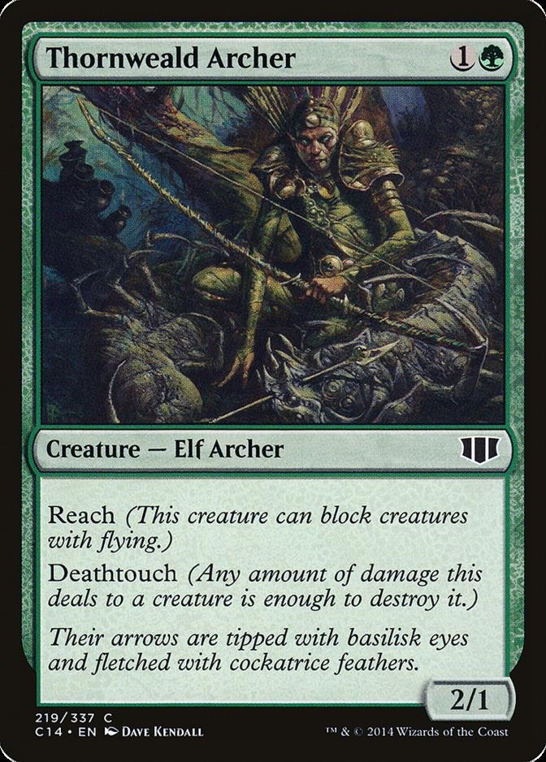

Abilities
There are over 150 different card abilities, in this simple handbook we will only go over the most common abilities.
| Abilities Name | What it does |
|---|---|
| Haste | Removes summoning sickness, allowing for creature to attack or activate abilities as soon as it is casted. |
| Flying | Can only be blocked by other things with flying or reach. |
| Reach | Able to block things with flying. |
| Flash | Can be cast at anytime an instant spell could be cast. |
| Defender | Cannot attack can only block. |
| Double Strike | During combat swings twice. |
| First Strike | Swings first during combat. |
| Deathtouch | When it deals damage to a creature that creature dies. |
| Hexproof | Cannot be the target of instant or sorcery spells. |
| Indestructible | Negates all damage. |
| Lifelink | You gain life equal to the damage dealt by the source with lifelink. |
| Trample | Deals remaining damage to defenders. |
Understanding interactions

VS.
Now Knowing what the abilities of these cards do we can look at how they would interact in combat. Let's say Atushi was attacking and Thornweald wanted to block. Thornweald is able to block atushi because it has reach, meaning it is able to block flying creatures. Now we move to the combat, Atsushi would deal 4 damage to Thornweald, since Atushi has trample and Thornweald is only a 2/1 Thornweald will die and 3 damage will be carried over to the player. At the same time Thornweald will deal 2 damage to Atsushi. And because Thornweald has deathtouch Atushi will also die.